Attentive Inception Module based Convolutional Neural Network for Image Enhancement
“基于 Attentive Inception Module 的卷积神经网络在图像增强中的应用”
- high quality：高质量
- low distortion：低失真
- singleimage superresolution (SISR)：单一图像超分辨率
- JPEG compression artifact removal：消除 JPEG 压缩伪影
- image distortions：图像失真
- denoising CNN (DnCNN) which developed a successful single model for image denoising, superresolution and compression artifact removal.
摘要
本篇论文通过提出一种卷积神经网络，其内含注意机制的 Inception 模块，解决了以单幅图像超分辨率和压缩伪影形式进行图像增强的问题。
方法是通过注意力机制对 Inception 多分支结构聚合的多尺度特征进行过滤，使学习的特征图加权，以减少冗余。
In this paper, the problem of image enhancement in the form of single image superresolution and compression artifact reduction is addressed by proposing a convolutional neural network with an inception module containing an attention mechanism.
I. INTRODUCTION
图像的增强方法可以从低级的图像处理算法到高级的机器学习和深度学习方法。
这篇论文的主要工作：解决了单一图像超分辨率（SISR）和 JPEG 压缩伪影去除的问题。In image superresolution，一个高分辨率（HR）图像是由单个低分辨率（LR）图像或多个低分辨率图像构建而成。
近年来，深度学习模型在图像增强领域取得了令人瞩目的成果。卷积神经网络（CNN）主要用于此类增强任务，当在自然图像的数据集上训练时，它试图通过迭代更新其参数来学习低质量和相应的高质量图像之间的映射。
这种数据驱动的监督方法可以使模型近似于高质量图像的自然性，而基于回归的损失函数和正则化方法可以对训练过程施加特定的前因和约束。
-
One of the first networks for SISR (SRCNN)
-
The efficient sub-pixel convolutional network (ESPCN)
-
ARCNN: introduced for JPEG compression artifact removal
-
…
✅ In this work, we propose a convolutional neural network with an inception module having dilated filters for multi-resolution feature extraction, along with short and long skip attention modules.
II. MODEL OVERVIEW
CNN 模型是一个端到端的结构，包含一系列具有注意力的 Inception 块。为了创建训练数据集，将 DIV2K 数据集中的一组 RGB 图像转换为 YCbCr 图像，并提取 Y 通道，即亮度分量。
（1）The low-quality input images for the compression artifact reduction task are generated by compressing them with different factors by the JPEG compression algorithm.
通过 JPEG 压缩算法对低质量的输入图像进行不同因子的压缩.
（2）For the superresolution task, the low-quality images are generated by resampling the original images or patches of images by various resampling factors. Overlapping patches are cropped from the low and high quality images.
通过对原始图像或图像的补丁按不同的重采样因子重采样生成的
从低质量图像（上面两种方式生成）和高质量图像（原图）中裁剪出重叠的 patch。低质量的 patch 被用作模型的输入，而高质量的 patch 被用作 ground truth。
Overlapping patches are cropped from the low and high quality images. The low-quality patches are used as inputs to the model while the original patches are used as the ground truth examples. The following section describes the proposed network architecture and the training of the model.
A. Network architecture
网络架构图如 Fig.1 所示。
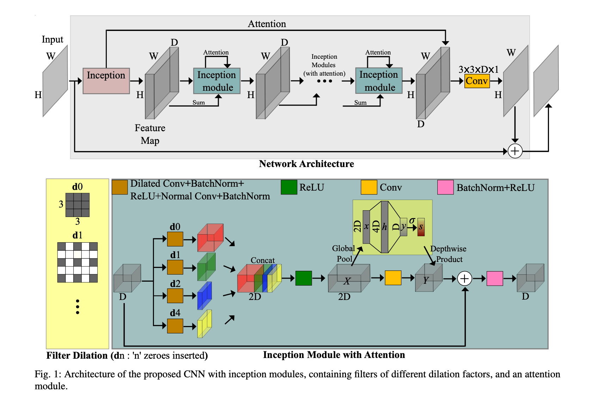
- 有多个 Inception 模块堆叠而成
- 每个 Inception 包含 4 条平行的卷积分支卷积块，
- 卷积层中使用的卷积核具有相同数量的可学习系数，但具有不同的扩张因子（different dilation factors），因此增加了卷积核的感受野。
在低质量的图像中，某些区域或邻域具有非常相似的信息，对于给定的网络深度，一个小的卷积核无法从这些邻域中提取和重建足够好的特征。因此，空洞卷积核有助于聚合多分辨率信息，同时忽略冗余像素，有利于图像的最终重建。
卷积层使用 3 × 3 × D 的核（D=64），四个分支的 dilation factors 分别为 0、1、2、4，其卷积核的数量或输出特征图的深度分别为 D、D/2、D/4 和 D/4。每一个卷积层之后都有一个批量归一化层（BN）。
在批归一化层之后，在每个分支中还有一个额外的卷积和批归一化层，这个卷积是普通的卷积。
分支的特征图 concatenated 后，得到深度为 2×D=128 的特征图。然后经过一个整流线性单元（ReLU）。
在 Inception 模块的内部，引入了一个通道维度的注意力机制（channel-wise attention）。
经过 Concat+ReLU 后，得到特征图 X，对其进行全局平均池化（global average pooling），得到一个长度为 2×D=128 的向量。
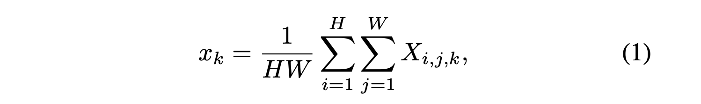
- 公式中的 i, j 表示特征图空间维度的索引（spatial indices）
- k 代表特征图的通道
然后将全局平均池化后得到的向量，输入到包含一个隐藏层神经元个数为 4×D 的神经网络中，最后得到一个长度为 D 的最终向量 y。然后在 y 向量上应用一个 sigmoid 函数得到向量 s。
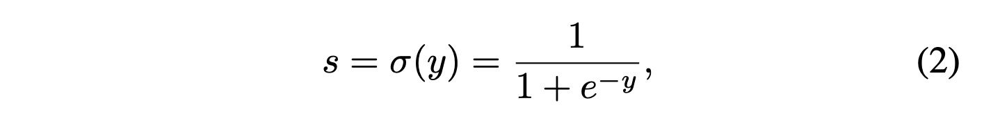
同时，在下面的分支，卷积层将通道数为 2D 的特征图 X 转换为通道数为 D 的特征图 Y，并与给定的注意力向量 s 元素进行通道的乘积（channel-wise product），得到最后的特征图 $Y^{att}$。
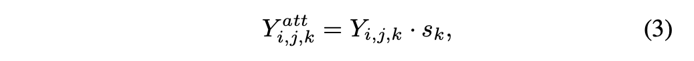
另外，网络还包含一个长跳接的注意力。channel-wise 软注意力独立地权衡每个特征通道，并为下面各层学习每个特征图的重要性分配。最早的注意力向量与具体的输入图像相关性更强，因此引入长跳接的注意力连接意在增强这种基于 CNN 输入的动态性质。
B. Loss Function and Hyperparameters
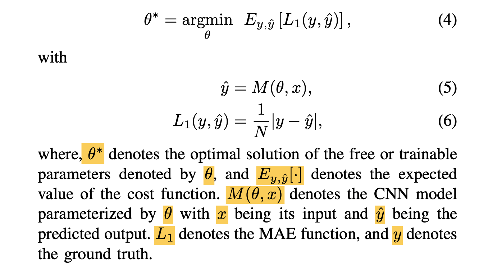
C. Experimental Observations
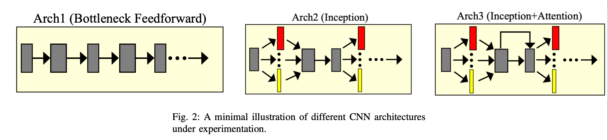
Fig.2 显示了不同的网络架构。
- Arch1 是一个简单的前馈网络，采用瓶颈结构，特征图在特征通道数上进行了扩展和压缩；
- Arch2 是 Inception 前馈架构；
- Arch3 是本篇论文提出的架构，引入了 Attention 模块
所有的架构都是残差性的，具有相同的层数和相似的特征量，从原始图像中以 192 的步幅，裁剪出 64px × 64px 的 patch 输入到网络中进行训练。
TABLE I 显示了组合数据集上的结果，峰值信噪比（PSNR）和结构相似性指数指标（SSIM）以 dB 为单位。
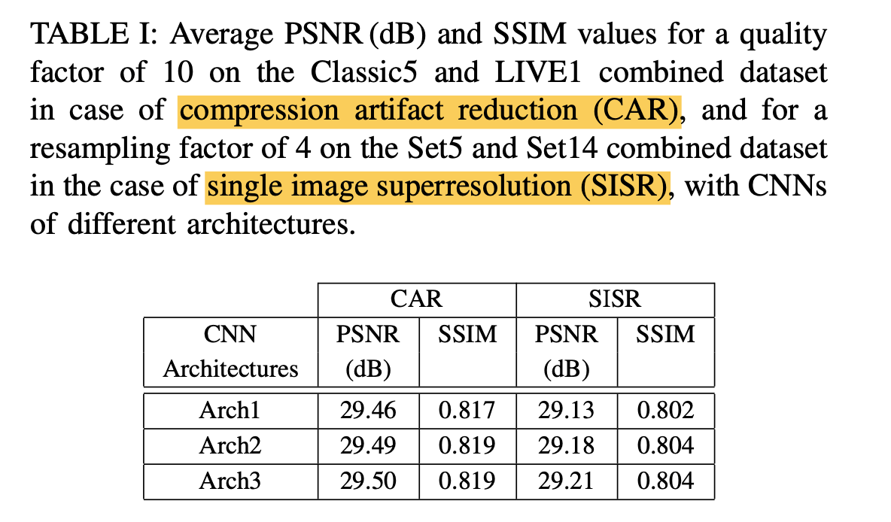
可以看出，inception blocks with dilation and attention mechanism 提升了性能。
在不同的网络深度下，通过改变批量归一化 Inception 模块数量，对提出的网络（Arch3）进行实验。
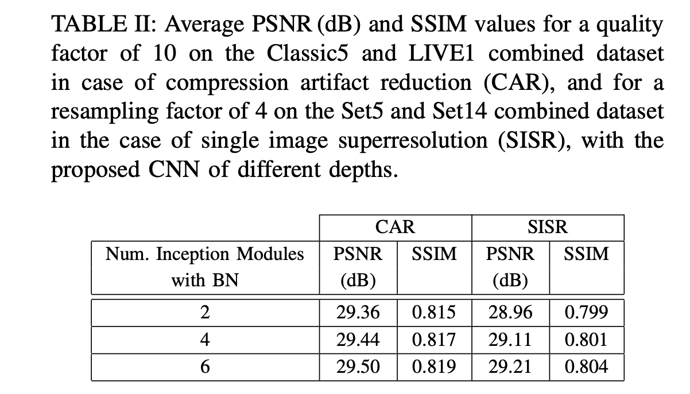
本篇论文的工作中的最终模型有 6 个 Inception 模块，但结果清楚地表明，随着网络深度的增加，性能有进一步改进的可能。
最终提出的网络（Arch3）有近 1.6M 的参数，而其他没有注意机制的架构有近 1.3M 的参数。
III. EVALUATION
-
DIV2K dataset
-
Classic5、LIVE1、Set5、Set14 和 BSD100(Berkeley segmentation dataset) 数据集
低质量的压缩图像是由 Matlab JPEG 编解码器产生。
最终网络由 6 个 Inception 模块组成，并进行批量归一化处理。
对于 SISR 的定量评估，使用了 PSNR 和 SSIM 指标，PSNR- B 用于 compression artifact removal。
针对超分辨率和 JPEG 伪影去除（for superresolution and JPEG artifact removal）。
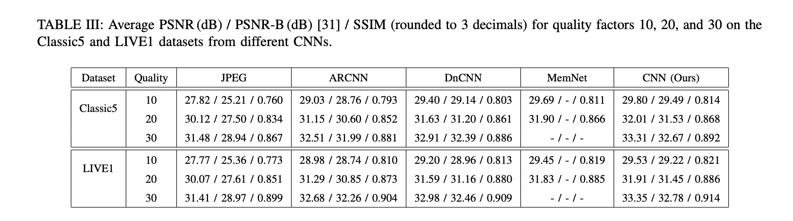
TABLE III 列出了本篇论文提出的网络在 PSNR、SSIM 和 PSNR-B 方面的结果。
在两个数据集上，比 JPEG 结果平均提高了约 1.89dB PSNR，而比 MemNet 平均提高了约 0.095dB。
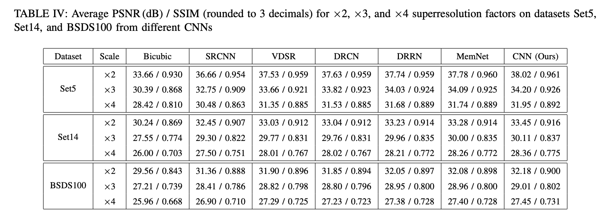
TABLE IV，本篇论文提出的网络在 Set5 和所有超分辨率因子上比 bicubic interpolation（二次方插值）实现了近3.9dB 的 PSNR 平均改进，而在 Set14 和 BSDS100 上的平均改进分别接近 2.7dB 和 2dB。在所有数据集上，比 MemNet 的平均改进幅度接近 0.13dB。
Fig 3 是 compression artifact removal and SISR 的结果（压缩伪影去除和 SISR）。
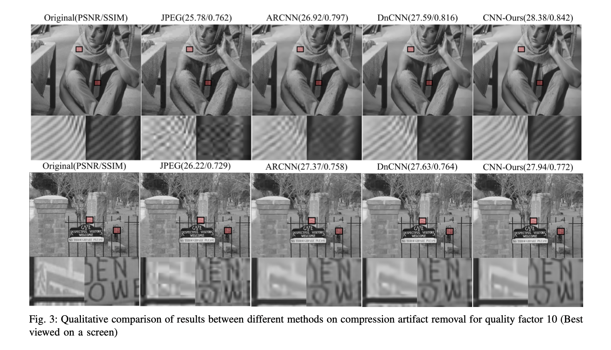
图 3 分别显示了 Classic5 和 LIVE1 测试数据集的两个例子，以及一对裁剪的部分。在图像中可以观察到，与其他 CNN 相比，本篇论文提出的模型执行的重建效果相对更好。DnCNN 和 ARCNN 在某些高纹理区域存在块状伪影和模糊现象，而本篇论文的模型的结果显示，相同的区域相对来说更加平滑。
在上边一行的例子中，可以观察到本论文模型能够比其他方法更好地重建围巾上的图案并去除某些伪影。在下边一行的例子中，可以看到在右边的补丁上，本论文的模型相比于其他方法去除了大部分字母周围的块状伪影，而在左边的补丁上，边缘相对更清晰。然而，整个图像中的某些区域由于在压缩的 JPEG 图像中完全丧失了信息，所以根本没有重建。
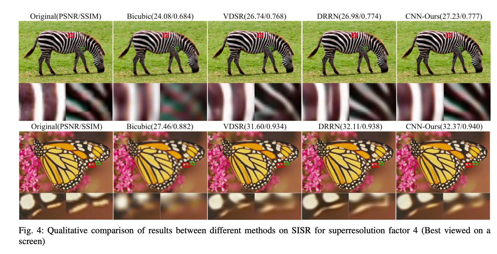
Fig.4 可以观察到的是，本论文的模型产生的结果与原始图像有更好或更接近的相似度，并在模式变化过程中产生更平滑的过渡。在斑马的图像中，从补丁中可以看出，与其他方法相比，产生的伪影更少，图案更平滑。
同样，在最下面一行的例子中，从补丁中可以看出，本论文的模型试图更可靠地重建图案。然而，对于某些图像，其他 CNN 似乎在某些区域产生了更清晰的纹理。
总的来说，可以得出结论，所提出的模型在引入了带有注意力机制的 Inception 模块后，对于这两个增强任务的表现令人钦佩。该模型的深度比较适中，作为未来的努力方向，可以尝试降低 Inception 块内的特征图深度，而增加 Inception 模块的数量，因为实验表明随着网络深度的增加，该模型还有进一步改进的空间。由于文献中存在更多的注意力形式，可以对其进行详细研究并适当实现。另外值得注意的是，与 SISR 相应的相对改进相比，compression artifact（压缩伪影）去除的相对定量改进较为一致，未来应从网络架构和各个任务的损失函数的角度进行仔细研究。
IV. SUMMARY AND CONCLUSION
实验采用不同的网络深度和模型架构来研究它们对整体重建质量的影响。在基准数据集上对所提出的网络进行评估，结果显示，与其他模型相比，attentive inception modules 网络在伪影抑制和重建质量上都有改善。